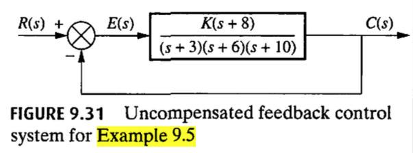
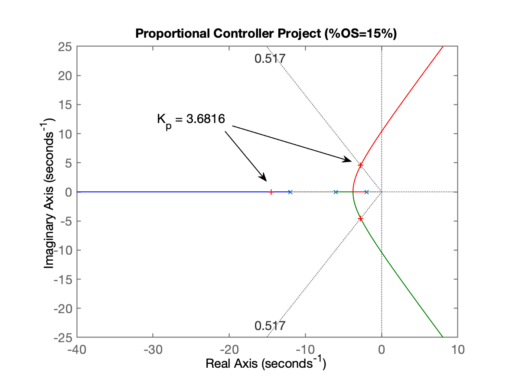
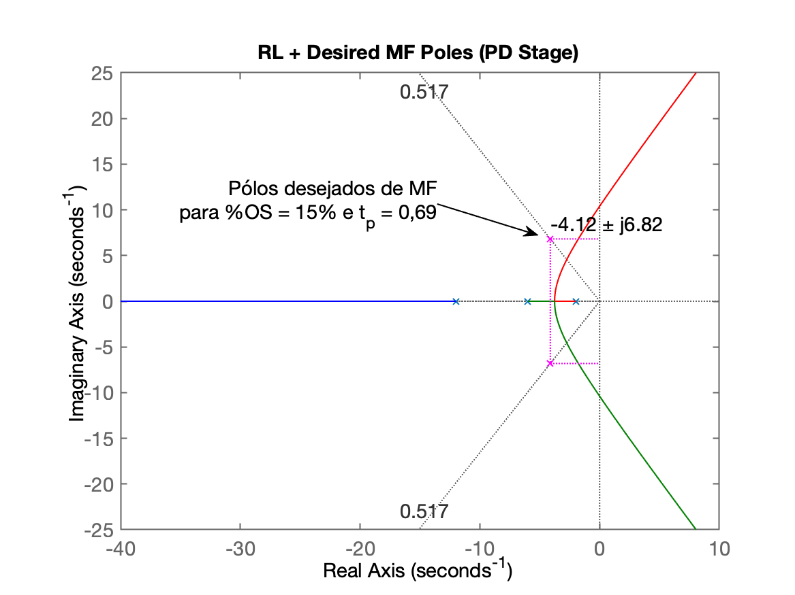
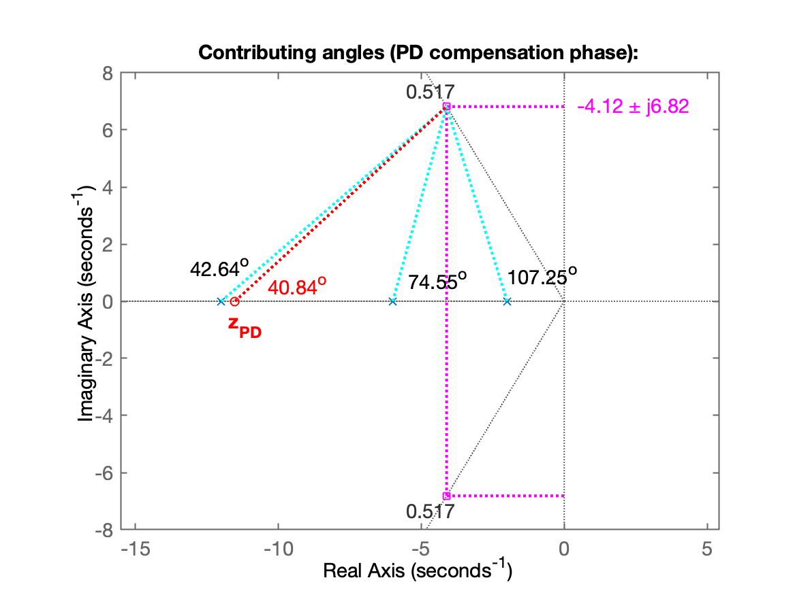
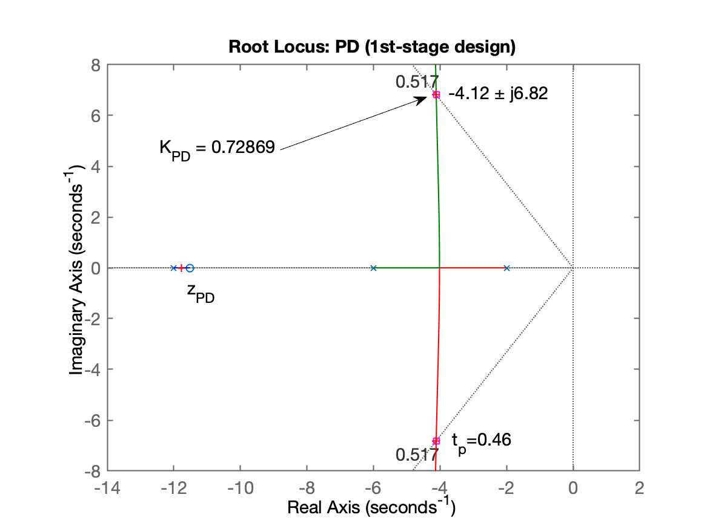
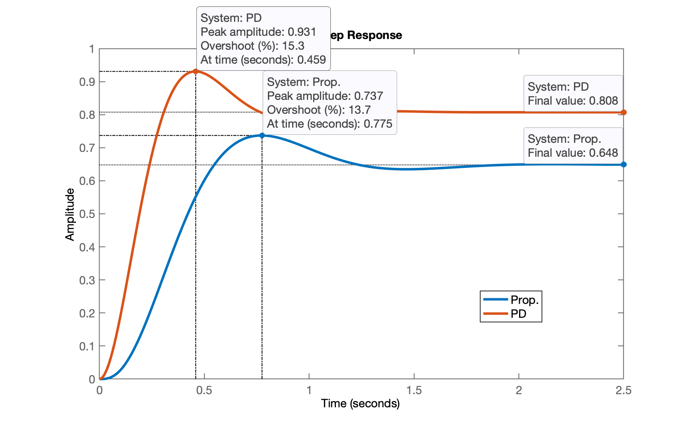
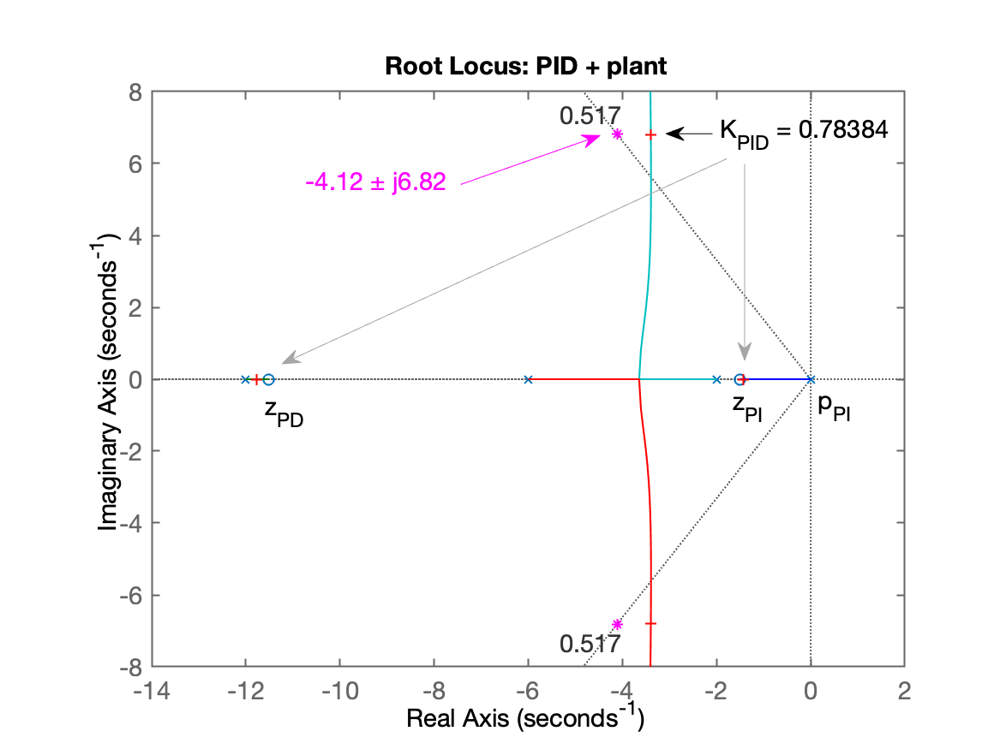
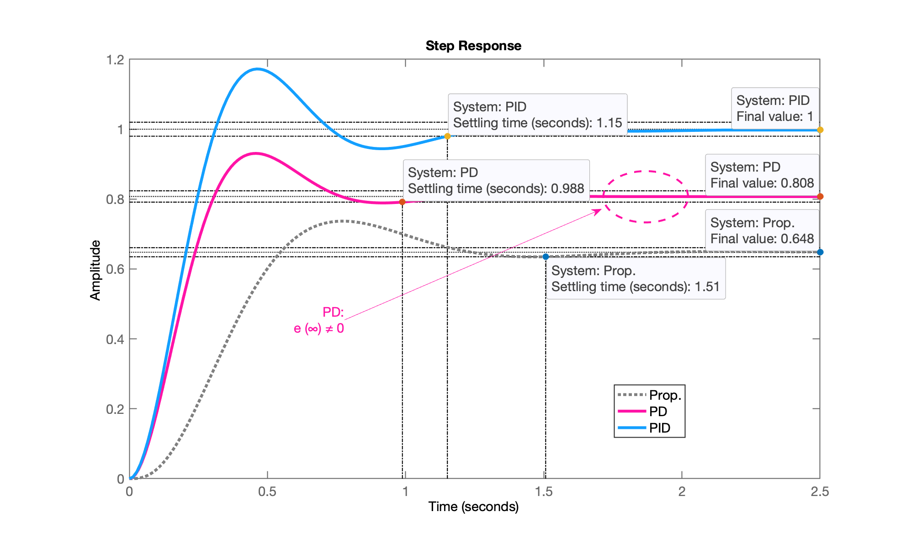
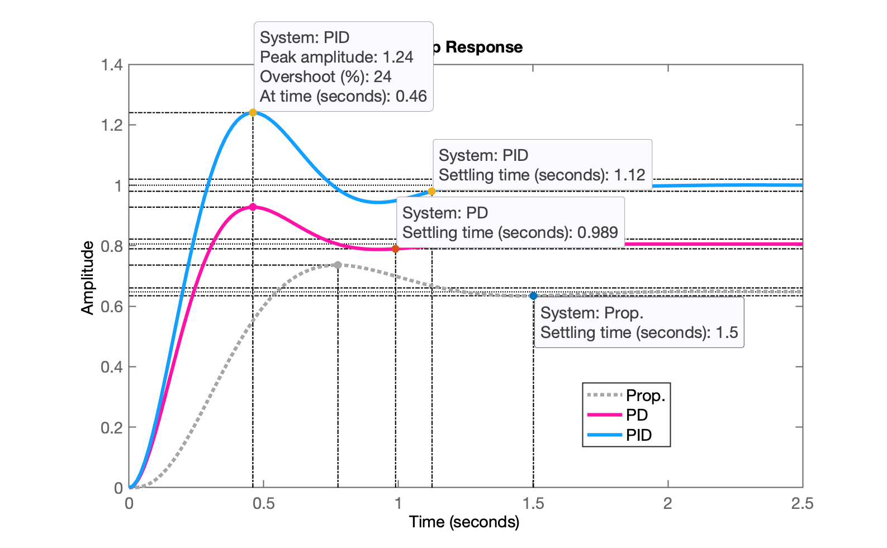

Projeto de Controladores usando Root Locus
2a-parte da aula de 28/05/2026. A primeira parte da aula pode ser obtida aqui. Arquivo de dados da aula: planta.mat (28/05/2026).
Continuando a aula de 28/05/2026 - 1a-parte … 🎵.
Projeto de PID
Iremos usar a mesma abordagem usada por NISE para o projeto do PID:
NISE, Norman S., Control System Engineering, John Wiley & Sons, Inc., 6th ed. 2011.

- Primeiramente projetamos um PD;
- Segundo: completamos o PID, acrescentado a ação PI.
Nesta abordagem, primeiro é definido a posição do zero do PD usando contribuição angular e depois são acrescentados o zero do PI e seu pólo na origem (integrador):

NISE criou o script ch9p2.m para automatizar o projeto de um controlador PID, no seu Example 9.5.
Example 9.5: Dado o sistema da Figura 9.31, projete um controlador PID de forma que o sistema possa operar com um tempo de pico que seja dois terços do tempo do sistema não compensado, com um sobressinal de 20% e com erro de estado estacionário zero para uma entrada em degrau.

Inspirado neste código foi organizado um novo script para auxiliar no projeto de PID usando esta abordagem de NISE no qual:
- Primeiro se define o ganho do controlador Proporcional usando Root Locus, em função do overshoot máximo tolerado. Isto é necessário para descobrir o tempo de pico associado com este controlador;
- Em seguinda um novo valor de tempo de pico é calculado correspondendo à
- Em função do overshoot e do novo
- Usando contribuição angular em função dos pólos de MF desejados, é determinada a localização do zero do PD.
- O usuário usa o RL da planta + PD para definir o ganho do PD.
- A rotina segue perguntando ao usuário a posição desejada para o zero do PI.
- Um novo RL correspondendo à planta + PID é mostrado para ajuste do ganho geral do PID.
- A resposta degrau em MF para os controladores é mostrada.
Este novo script foi chamado de: example_9_5.m (Obs.: seu código foi revisado em 01/06/2026).
Verificando (usando comando what) se o script example_9_5.m está presente na pasta atual de trabalho:
>> what
MATLAB Code files in the current folder /Volumes/DADOS/Users/fpassold/Documents/UPF/Sistemas de Controle/2026_1/Matlab_2026_1
example_9_5 find_polo_zero
MAT-files in the current folder /Volumes/DADOS/Users/fpassold/Documents/UPF/Sistemas de Controle/2026_1/Matlab_2026_1
matlab planta
>>Projetando o PID para nossa planta do estudo de caso, usando o script originalmente desenvolvido por NISE:
>> % Lembrando da equação da nossa planta>> zpk(G)
ans = 72 ------------------ (s+12) (s+6) (s+2) Continuous-time zero/pole/gain model.
>>Necessitados editar o script original para informar a nossa planta e não a planta do example 9.5 de NISE:
>> edit example_9_5Necessitamos alterar as linhas destacadas abaixo (e somente estas):
% Edit the lines below to specify the numerator and denominator of the% plant's transfer function. % num=[1 8]; % den=poly([-3 -6 -10]);num = 72;den = poly([-2 -6 -12]);Executando o script (note que este script fecha todas as janelas gráficas atuais e limpa as variáveis do Matlab; processa com cautela salvando dados antes se necessário):
>> example_9_5Routine to assist in the design of a PID Controller.Based on script ch9p2.m, example 9.5 from de book:Nise, Norman S., Control System Engineering,6th ed. 2011, John Wiley & Sons, Inc.Plant to be compensated:
ans = 72 ------------------ (s+12) (s+6) (s+2) Continuous-time zero/pole/gain model.
Maximum tolerated overshoot percentage (%OS): ? 15Corresponding damping factor (zeta): 0.516931
Plotting the plant's RL diagram for proportional controller design.Proportional Controller Tuning:Look at Figure 1: Do a zoom over the area of interest and press any bottom to continue...Neste ponto temos a primeira figura, mostrando o RL para o Controlador Proporcional, onde se faz necessário selecionar o ponto do ganho para atingir o

Continuando...
Select a point in the graphics windowselected_point = -2.7405 + 4.5395ik = 3.6816poles = -14.497 + 0i -2.7517 + 4.5439i -2.7517 - 4.5439i
Based on the tuned Proportional Controller:Estimated settiling time: 1.45363Estimated peak time: 0.691394 Starting the PD Project Phase:Calculating new t_p = (previous t_p)*2/3...New peak time: t_p = 0.460929
Calculating the guide line angle relative to the desired zeta (prop. theta (cos(zeta)): 58.87^o180^o - theta = 121.13^o
Determining the real and imaginary parts for desired poles of MF...Desired MF poles at: s = -4.11586 ± j6.81578
Opening another graphical window showing RL with desired position for MF poles...Figure 2 shows the RL + desired MF poles associated with the PD design.Neste ponto da execução do script é gerada o segundo gráfico:

Continuando com o script, o mesmo realiza os cálculos de contribuição angular associados com o projeto do PD e cálculos necessários para determinação do zero do PD:
Calculating angle Contribution of poles of the open loop system: p(1) = -12 --> 40.84^o p(2) = -6 --> 74.55^o p(3) = -2 --> 107.25^oSum of the angular contributions of the poles: 222.64^o
Sum of total angular contributions: 222.64^oFinal Resulting angle for the PD zero: 42.64^o
Position of the zero of the PD: in s =-11.5185Figure 3 shows the angular contributions and position found for the zero of the PD.Neste ponto da execução é gerada a terceira janela gráfica mostrando o resultado das contribuições angulares:

O script continua com:
PD controller equation (without general gain):
C_{PD}(s) = (s + 11.5185)
PD Tuning Stage:Figure 4 shows the direct-loop RL of the system with the PD.Do a zoom over the area of interest and press any bottom to continue...Neste ponto temos a quarta janela gráfica mostrando o RL do PD para ajuste de seu ganho:

O script continua com:
xxxxxxxxxxSelect a point in the graphics windowselected_point = -4.1197 + 6.8299iK_pd = 0.72869poles_pd = -11.768 + 0i -4.1161 + 6.83i -4.1161 - 6.83i
Complete PD equation:
C_{PD}(s) = 0.728693 (s + 11.5185)
Closing the loop with the chosen gain for the PD...Desired t_p = 0.460929, checking t_p reached:ans = struct with fields:
RiseTime: 0.20793 SettlingTime: 0.98831 SettlingMin: 0.75256 SettlingMax: 0.93083 Overshoot: 15.263 Undershoot: 0 Peak: 0.93083 PeakTime: 0.45872
Figure 5 shows the MF step response obtained with the PD and Proportional Controllers.E temos uma quinta janela gráfica mostrando a resposta em MF da planta para o PD recém definido:

O script continua processando agora a introdução do PI, requisitando a posição desejada para o zero do PI:
xxxxxxxxxxFinal step --> adding PI action:Select a position for the zero of PI,between -12 <= s < 0) [-2]: ? -1.5
PID transfer function (without overall gain):
K (s+11.5185) (s+1.5)C_{PID}(s) = --------------------- s
PID + Plant transfer function:
ans = 72 (s+11.52) (s+1.5) -------------------- s (s+12) (s+6) (s+2) Continuous-time zero/pole/gain model.
PID overall gain tuning:Figure 6 shows the RL of PID + plant (for PID tuning)...Do a zoom over the area of interest and press any bottom to continue...E temos a sexta janela gráfica mostrando o RL da planta + controlador PID com definição do seu ganho genérico:

O script finaliza com:
xxxxxxxxxxSelect a point in the graphics windowselected_point = -3.3984 + 6.8067ik_PIDg = 0.78384poles_PIDg = -11.776 + 0i -3.3967 + 6.8067i -3.3967 - 6.8067i -1.4309 + 0i
Final (complete) equation of the PID (variable "PID2"):
ans = 0.78384 (s+11.52) (s+1.5) ------------------------- s Continuous-time zero/pole/gain model.
K_p = 10.2045 K_i = 13.543 K_d = 0.783843
Figure 7 shows the MF response to a step input obtained for the controllers.
ans = struct with fields:
RiseTime: 0.21082 SettlingTime: 1.1511 SettlingMin: 0.92878 SettlingMax: 1.1724 Overshoot: 17.236 Undershoot: 0 Peak: 1.1724 PeakTime: 0.46096>> E temos a sétima e ultima janela gráfica gerada pelo script mostrando a resposta final obtida:

Observação: Um PID ainda mais rápido pode ser obtido ajustando a posição do zero do PI para
xxxxxxxxxx K_p = 10.7009 K_i = 18.2401 K_d = 0.79042Sua resposta ao degrau unitário rende:
xxxxxxxxxx RiseTime: 0.19853 SettlingTime: 1.1245 SettlingMin: 0.91711 SettlingMax: 1.24 Overshoot: 23.999 Undershoot: 0 Peak: 1.24 PeakTime: 0.45978conforme mostrado na figura abaixo:

Encerrando esta seção de trabalho:
xxxxxxxxxx>> save pid % se salvar como planta vai sobre-escrever dados dos outros projetos! >> diary off>> exitFernando Passold, em 01/06/2026